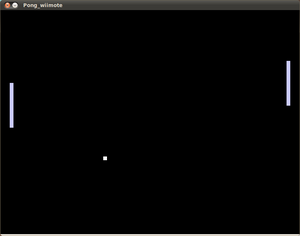
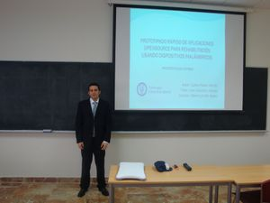
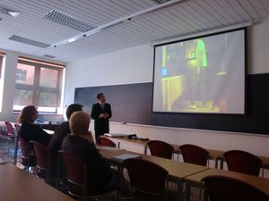
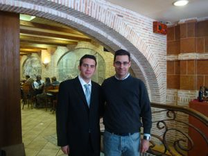

Prototipado rápido de aplicaciones Opensource para rehabilitación usando dispositivos inalámbricos


El juego del pong controlado con un wiimote (click para ampliar)
- Descripción: Proyecto Fin de Carrera
- Autor: Carlos Pastor Herrán
- Tutor: Juan González
- Cotutor: Alberto Jardón
- Fecha lectura: 28-Octubre-2010
- Lugar: Escuela Politécnica Superior. UC3M
Descargas
|
Vídeos
Licencia
| |
| |
Enlaces
- Índice de Proyectos fin de Carrera
- RoboWii: Control de robots con wiiboard y wiimote
Bitácora
|  Carlos Pastor, momentos antes de la lectura (click para ampliar) |
 Carlos Pastor, durante la defensa del proyecto (click para ampliar) |


|  Carlos Pastor y Juan González. Celebrando la lectura (click para ampliar) |

Noticias
- 30/Octubre/2010: Comenzada esta página